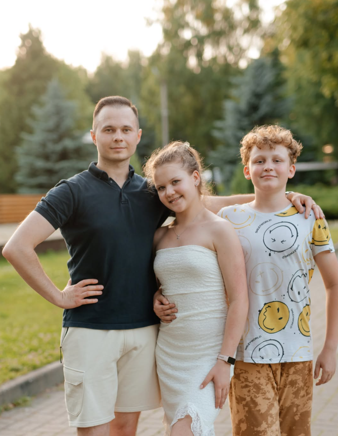

ТСК «Мáксима» / 2017—2026РЕЗУЛЬТАТ
РЕЗУЛЬТАТ
НЕ СЛУЧАЙНОСТЬ.
Спортивный архив ТСК «Мáксима».
0GOLD
0SILVER
0BRONZE
0тренировочных часов
0выхода на паркет
0финала
0медалей
0турниров
0месяцев тренировок
0районных и городских мероприятий
0республиканских соревнований
0международных соревнований
0областное соревнование
0этапа Первенства Республики Беларусь